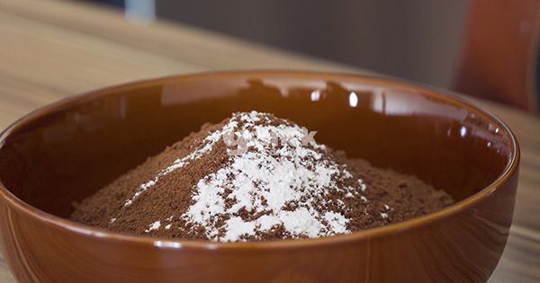
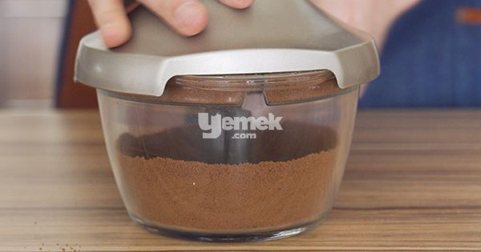
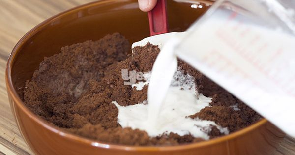
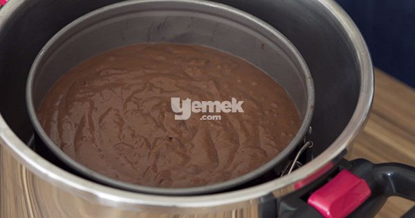
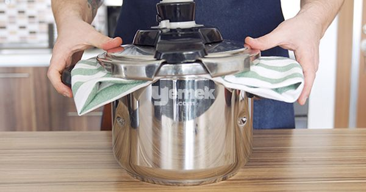
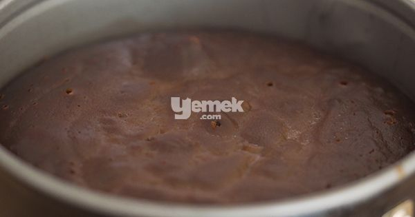
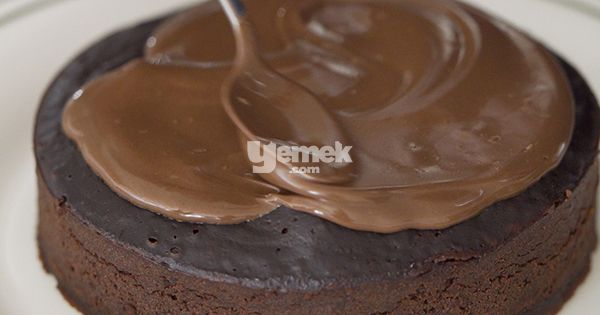
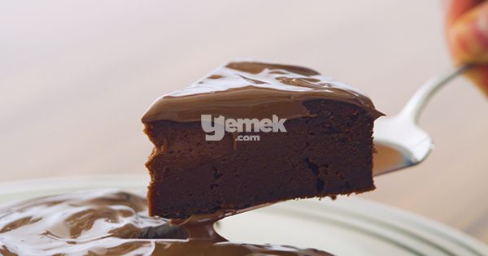

Ben Bunu Yerim: 3 Malzemeli Kek Tarifi
anasayfa
tarif gönder
iletişim

3 Malzemeli Kek Tarifi İçin Malzemeler
4 çay bardağı süt
2 yemek kaşığı Nutella
3 Malzemeli Kek Tarifi Nasıl Yapılır?
'Aşama 1': Bisküvileri robotta ya da ezerek toz haline getirin ve bir karıştırma kabına alın.

'Aşama 2': Kabartma tozunu ekleyip karıştırın.

'Aşama 3': Son olarak sütü kontrollü ekleyip spatula ya da kaşıkla karıştırın.
Karışım yumuşak ve akışkan olana kadar mutlaka karıştırma işlemine devam edin.

'Aşama 4': Karışımı, hafifçe yağlanmış ufak bir kalıba dökün.
Derin bir tencerenin içine bir kase ya da derin tabak yerleştirin,
tencerenin tabanına kalıba değmeyecek kadar sıcak su ekleyip kalıbı kasenin üzerine yerleştirin.

'Aşama 5': Tencerenin üzerine bir bez örtün ve kapağını kapatın.

'Aşama 6': Kısık ateşte 25-30 dakika kek pişene kadar pişirin.
Pişen keki tencereden çıkarıp 10-15 dakika dinlendirip kalıptan çıkarın.

'Aşama 7': Nutella'yı benmaride eritip kekin üzerine döküp servis yapın.

'Aşama 8': Ayrıca servis için krem şanti, dondurma ya da reçel de kullanabilirsiniz.Afiyet olsun!

©her hakkı saklıdır®